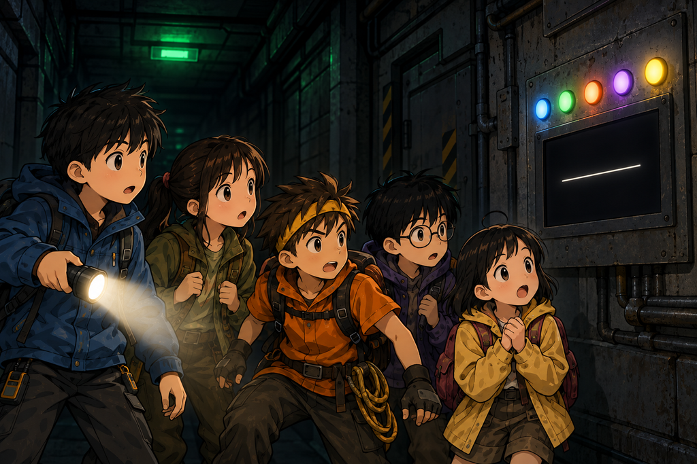

ห้องที่ยังมีไฟ
เวลาอ่านประมาณ 12 นาที · Electricity / Battery / Mystery
ไฟสีเขียวหลังกำแพงกะพริบห้าครั้ง แล้วกลับมาสว่างนิ่ง
ไม่มีใครก้าวผ่านประตูเข้าไปทันที
เด็กทั้งห้ายืนอยู่หน้าช่องแคบ ๆ ที่เปิดออกมา ลมเย็นจากข้างในพัดผ่านหน้าพวกเขาออกไปสู่ป่า กลิ่นข้างในไม่เหมือนอะไรที่ใครเคยได้กลิ่นมาก่อน ไม่ใช่กลิ่นเหม็น แต่เป็นกลิ่นแห้ง ๆ ของโลหะกับฝุ่นที่นอนนิ่งมานานมาก
ต้นกล้าชะโงกดูก่อนใคร “มืดสนิทเลย”
“ก็มันอยู่ใต้ดิน” ปั้นตอบ
“เราแค่จะบอกเฉย ๆ”
นนท์มองไปทางป่าด้านหลัง แสงสุดท้ายของวันกำลังหายไปจากยอดไม้ ถ้าพวกเขาไม่เข้าไปตอนนี้ ก็ต้องนอนกลางป่าอีกคืนโดยที่ไม่รู้ว่าคืนนี้ฝนจะมาอีกไหม
“เราเข้าไป” เขาพูด “แต่เข้าไปแบบที่ออกมาได้”
เขาผูกเชือกกับวงล้อด้านนอกให้แน่นอีกรอบ เพื่อไม่ให้ประตูปิดเอง แล้วแบ่งหน้าที่
มีนาถือกระดาษแผ่นบางไว้ใกล้ช่อง คอยดูว่าลมยังพัดออกหรือเริ่มเปลี่ยนทิศ ปั้นบันทึกเวลา ต้นกล้าส่องไฟโทรศัพท์ลงไปตามบันได ส่วนฟ้ายืนห่างจากขอบประตูหนึ่งก้าวพร้อมนกหวีดในมือ
“ระหว่างที่เราเช็กบันได ฟ้ายืนตรงนี้นะ” นนท์บอก “ถ้ามีอะไรผิดปกติ เป่าเลย”
“แล้วหนูต้องอยู่ข้างบนคนเดียวเหรอคะ” ฟ้าถาม
“ไม่” นนท์ตอบทันที “ไม่มีใครอยู่คนเดียวทั้งข้างบนและข้างล่าง พอเช็กเสร็จ เราลงไปพร้อมกันห้าคน”
ฟ้าพยักหน้าช้า ๆ แล้วกำนกหวีดแน่นขึ้น
“เดี๋ยวก่อน” มีนาพูดขึ้นก่อนที่ใครจะลงบันได
เธอเดินกลับไปที่กิ่งไม้หน้าทางเข้า ผูกเศษผ้าสีสดผืนใหญ่ที่สุดที่เหลืออยู่เข้ากับกิ่งที่สูงที่สุดเท่าที่เอื้อมถึง แล้วก้มลงเรียงก้อนหินบนพื้นเป็นรูปลูกศรชี้ตรงไปที่ประตู
“ทำอะไรน่ะ” ต้นกล้าถาม
“ถ้าครูตามมาหา เราต้องให้เขาเห็นว่าเราอยู่ไหน” เธอตอบโดยไม่เงยหน้า “ไม่ใช่หายเข้าไปเฉย ๆ แล้วให้เขาเดินผ่านตรงนี้ไป”
ต้นกล้าเงียบไปครู่หนึ่ง แล้วเดินไปช่วยเรียงหินอีกด้าน
1
บันไดโลหะทอดลงไปในความมืดจนมองไม่เห็นปลาย
ปั้นนับจากด้านบนก่อน แล้วนับซ้ำอีกรอบให้แน่ใจ
“ยี่สิบสามขั้น”
“นายนับได้ยังไง ไฟส่องไม่ถึงข้างล่างด้วยซ้ำ” ต้นกล้าถาม
“นับจากระยะห่างของขั้นกับความสูงของผนัง” ปั้นตอบ “อาจคลาดหนึ่งขั้น”
“บันไดอาจลื่นนะ” มีนาเตือน เธอส่องไฟไปที่ขั้นล่าง ๆ แล้วเห็นคราบตะไคร่บาง ๆ จับอยู่ตรงที่น้ำเคยไหลผ่าน “ตรงที่มีน้ำหยดลงมาน่ะ ระวังหน่อย”
ต้นกล้าใช้กิ่งไม้เขี่ยเศษดินกับใบไม้เปียกออกจากสามขั้นแรก
พวกเขาลงทีละคนโดยเว้นระยะห่างกันสองขั้น นนท์ลงก่อน ตามด้วยปั้น มีนา ต้นกล้า และฟ้าอยู่ตรงกลางระหว่างมีนากับต้นกล้า เพราะเป็นคนเล็กที่สุด
“ห้ามจับสายโลหะที่พาดตามผนังนะ” นนท์ย้ำจากข้างล่าง “จับราวบันไดอย่างเดียว”
ยิ่งลงไป อากาศยิ่งเย็นลงและนิ่งขึ้น เสียงป่าที่เคยดังอยู่รอบตัวมาสองวันค่อย ๆ หายไปทีละนิด จนเหลือแค่เสียงรองเท้ากระทบขั้นโลหะของตัวเอง
ฟ้าเงยหน้ามองขึ้นไปข้างบน ช่องประตูที่เปิดอยู่กลายเป็นรูปสี่เหลี่ยมสีเทาเล็ก ๆ ไกลออกไป
“ข้างบนเล็กลงแล้วค่ะ”
“มันไม่ได้เล็กลง” ปั้นตอบ “เราแค่ไกลมันขึ้น”
“หนูรู้ค่ะ แต่มันก็ยังดูเล็กลงอยู่ดี”
มีนาไม่ได้พูดอะไรเลยตลอดทางลง เธอจับราวบันไดแน่นกว่าคนอื่น และเดินให้อยู่ในลำแสงไฟฉายของต้นกล้าตลอดเวลา
“มีนาโอเคไหม” นนท์ถาม
“โอเค” เธอตอบเร็วไปนิดหนึ่ง “แค่ไม่ชอบที่มืดขนาดนี้”
“ถ้าอยากขึ้นไปข้างบน บอกได้เลยนะ”
“ไม่ต้อง” เธอลงอีกขั้นหนึ่ง “แต่ขออย่าปิดไฟก็แล้วกัน”
2
บันไดจบลงที่ห้องโถงเล็ก
ผนังเป็นคอนกรีตเปลือย แห้งกว่าที่ทุกคนคิดไว้มาก ท่อโลหะหลายเส้นวิ่งไปตามเพดานแล้วหายเข้าไปในผนัง มีประตูภายในอีกสามบานที่ยังปิดสนิท
สิ่งเดียวที่ทำงานอยู่คือโคมไฟฉุกเฉินสีเขียวดวงเดียวเหนือหัวพวกเขา
ปั้นมองนาฬิกา “ห้าโมงสี่สิบเอ็ดนาที”
ต้นกล้าเงยหน้ามองโคม “แบตเตอรี่อะไรอยู่ได้นานขนาดนี้”
“อาจไม่ได้อยู่ด้วยแบตเตอรี่ก้อนเดิมก็ได้” นนท์ตอบ “หรืออาจมีแหล่งพลังงานอื่นคอยชาร์จให้ แต่เรายังไม่รู้ว่าระบบมันทำงานยังไง”

สถานีดูเหมือนถูกทิ้งมานาน แต่ไฟฉุกเฉินกลับยังทำงาน
ปั้นเจอกล่องสีเทาอยู่ใต้โคมไฟ บนหน้ากล่องมีหน้าปัดเข็มกับสัญลักษณ์แบตเตอรี่จาง ๆ
“เข็มเกือบหมดแล้วนะ” เขารายงาน
“เกือบหมดแปลว่าเราเหลือเวลาเท่าไร” มีนาถาม
“ยังบอกไม่ได้ ขอดูก่อน”
เขายืนมองหน้าปัดนิ่ง ๆ อยู่อย่างนั้น จนต้นกล้าเริ่มกระสับกระส่าย แล้วจู่ ๆ ปั้นก็พูดขึ้น
“มันเด้ง”
“อะไรเด้ง”
“เข็มน่ะ เมื่อกี้มันเด้งขึ้นนิดหนึ่ง” เขาก้มดูนาฬิกา “รออีกสิบเอ็ดวินาที”
ทุกคนหยุดมอง
กึก…
พื้นสั่นเบา ๆ ใต้ฝ่าเท้า แล้วเข็มก็กระตุกขึ้นอีกครั้ง
“จังหวะเดียวกับเสียงที่พาเรามาที่นี่เลย” นนท์พูด
“ใช่” ปั้นจดลงสมุด “ทุกครั้งที่พื้นสั่น มันได้ไฟมาก้อนหนึ่ง แล้วก็ค่อย ๆ ใช้หมดไประหว่างรอ”
ระหว่างนั้นมีนากำลังส่องไฟไปตามผนัง แล้วเธอก็หยุดมือ
“มาดูนี่หน่อยสิ”
สายไฟบนผนังมีสองชุดเดินคู่ขนานกันไป ชุดหนึ่งหุ้มฉนวนเก่าจนแตกร้าวเป็นเกล็ด อีกชุดดูใหม่กว่าอย่างเห็นได้ชัดและแทบไม่มีฝุ่นเกาะเลย
เธอส่องไฟไล่ตามสายเส้นใหม่ไปจนสุด มันวิ่งไปทางประตูบานขวา และบนพื้นใต้แนวสายนั้น รอยฝุ่นขาดเป็นทางยาวไปทางเดียวกัน
“ถ้าสถานีนี้ร้างจริง” มีนาพูดช้า ๆ “ทำไมสายเส้นนี้ถึงสะอาดกว่า”
ไม่มีใครตอบได้
ต้นกล้ายื่นมือไปจะแตะสายเส้นใหม่ นนท์รีบคว้าข้อมือเขาไว้
“อย่า”
“เราแค่จะดูว่ามันอุ่นไหม”
“ถ้ามันอุ่น แปลว่ามันมีไฟวิ่งอยู่ แล้วนายจะรู้ตอนที่สายมันบอกนายเอง” นนท์ปล่อยมือ “เราไม่รู้แรงดัน ห้ามแตะสายหรือเปิดกล่อง ใช้แค่ตาดูกับหูฟังพอ”
ต้นกล้าเอามือใส่กระเป๋าเสื้อทั้งสองข้างอย่างตั้งใจ “เก็บมือแล้ว”
3
ฟ้ายกมือขึ้นขอให้ทุกคนเงียบ
“ฟังสิคะ”
ทุกคนหยุดพูด ตอนแรกไม่มีใครได้ยินอะไรเลยนอกจากเสียงลมหายใจของตัวเอง
แล้วมันก็มา เสียงหึ่ง ๆ เบามากจากหลังประตูบานขวา เบาจนต้องกลั้นหายใจถึงจะจับได้
“พัดลม” ปั้นพูด
“แล้วทำไมมันหายไปล่ะคะ” ฟ้าถาม
เธอพูดถูก ทุกครั้งที่พื้นสั่น เสียงหึ่งจะหายไปชั่วขณะ แล้วค่อยกลับมา ปั้นเริ่มนับจังหวะด้วยนิ้วลงบนสมุด นับไปสิบกว่ารอบ
“ห่างเท่ากันหมดทุกครั้ง” เขาสรุป “ไม่ใช่สุ่ม”
นนท์เดินไปยืนหน้าประตูทั้งสามบานทีละบาน โดยไม่แตะลูกบิดหรือวงล้อใด ๆ
มีนาตามไปด้วย เธอเอาหลังมือแตะบานซ้ายเบา ๆ “บานนี้มีหยดน้ำเกาะ เย็นแล้วก็ชื้น”
“บานกลาง” เธอขยับไป “อุ่นกว่านิดหนึ่ง”
“อุ่นแปลว่ามีอะไรทำงานอยู่ข้างในหรือเปล่า” ต้นกล้าถาม
“อาจใช่ หรืออาจแค่มีท่อร้อนวิ่งผ่านหลังผนังก็ได้”
พอถึงบานขวา เธอหยุดนานกว่าสองบานแรก “บานนี้เย็นที่สุด แล้วก็เป็นบานที่มีเสียงพัดลม”
เธอหยิบใบไม้แห้งใบเล็กที่ติดมากับรองเท้าออกมา แล้ววางลงบนพื้นใกล้ช่องใต้ประตู
ทุกคนก้มดู
ใบไม้ค่อย ๆ ขยับเข้าไปด้านใน ช้ามาก แต่ขยับแน่นอน
“ห้องขวากำลังดูดอากาศอยู่” มีนาบอก
“ดูดไปทำไมคะ” ฟ้าถาม
“ไม่รู้” มีนาลุกขึ้นยืน “แล้วเพราะไม่รู้ เราก็เลยยังไม่เปิด”
พวกเขาสำรวจแค่ห้องโถงเท่านั้น ปั้นสเก็ตช์ตำแหน่งประตูกับโคมไฟลงสมุด ต้นกล้าใช้เชือกวัดระยะจากบันไดถึงผนังแต่ละด้านแล้วบอกตัวเลขให้ปั้นจด ฟ้าเดินตรวจว่ามีของชิ้นไหนวางขวางทางกลับหรือเปล่า แล้วรายงานว่าไม่มี
“ถ้าไฟดับหรืออากาศเปลี่ยน เราขึ้นบันไดทันทีนะ” นนท์บอก “ไม่ต้องเก็บของ ไม่ต้องรอใคร ขึ้นเลย”
แล้วโคมฉุกเฉินก็หรี่ลง
ต้นกล้ามองหน้าจอโทรศัพท์ในมือ “แบตเราเหลือสิบสองเปอร์เซ็นต์”
ข้างบน ช่องสี่เหลี่ยมที่เคยเป็นสีเทากลายเป็นสีดำไปแล้ว ข้างนอกมืดสนิท เงาของบันไดทอดยาวเข้ามาในห้องโถงจนดูเหมือนซี่โครง
🧠 หยุดคิดสักครู่
ทีมต้องเลือกว่าจะใช้พลังงานที่เหลืออยู่ยังไง ข้อไหนปลอดภัยที่สุด?
A. เปิดไฟฉายโทรศัพท์ทุกเครื่องให้สว่างที่สุดไว้ก่อน
B. ต่อโทรศัพท์เข้ากับสายไฟเก่าของสถานีเพื่อชาร์จ
C. ใช้ไฟทีละเครื่อง เก็บเครื่องที่เหลือไว้เป็นพลังงานสำรอง และไม่แตะระบบไฟที่เราไม่รู้จัก
เลือกไว้ในใจก่อน แล้วค่อยอ่านต่อนะ
4
“A สิ” ต้นกล้าพูดก่อนใคร “มืดขนาดนี้ เปิดให้หมดเลย”
“แล้วอีกสองชั่วโมงล่ะ” ปั้นถาม
ต้นกล้าหยุดคิด “…ก็ไม่เหลือ”
“B ก็ไม่ได้” มีนาพูด “เราไม่รู้ว่าสายพวกนั้นมีแรงดันเท่าไร ต่อผิดทีเดียวโทรศัพท์พังทั้งเครื่อง แล้วเราจะเหลือน้อยกว่าเดิมอีก”
“C” ฟ้าพูดสั้น ๆ
ทุกคนหันมามอง
“ก็พี่ ๆ พูดกันเองว่าอีกสองข้อไม่ได้นี่คะ”
นนท์กำหนดให้โทรศัพท์ของต้นกล้าใช้ส่องทางเครื่องเดียว เครื่องของมีนาที่แบตเยอะที่สุดปิดสนิทและเก็บไว้สำหรับโทรฉุกเฉินอย่างเดียวถ้าวันหนึ่งกลับขึ้นไปแล้วเจอสัญญาณ ส่วนที่เหลือปิดหมด
“แล้วเราจะรู้ได้ยังไงว่าใช้ไปเท่าไรแล้ว” มีนาถาม
ฟ้าหยิบปากกาจากกระเป๋าของปั้น แล้วเขียนเวลาลงบนหลังแขนตัวเอง
“เขียนตรงนี้ค่ะ จะได้ไม่ลืม”
“จดในสมุดก็ได้นะ” ปั้นบอก
“สมุดอยู่กับพี่ แต่แขนอยู่กับหนู”
ปั้นเถียงไม่ออก
ระหว่างนั้นเขาก็กลับไปยืนอ่านค่าจากหน้าปัดต่อ โดยไม่เปิดกล่อง เขาจับเวลาสามรอบ จดตัวเลขลงสมุดทั้งสามรอบ แล้วเงยหน้าขึ้น
“ตอนโคมสว่าง เข็มลดลงช้า ๆ แต่พอพื้นสั่น เข็มเพิ่มขึ้นทุกครั้ง สามรอบได้เลขใกล้กันหมด”
“แปลว่าอะไร” ต้นกล้าถาม
“แปลว่ามันถูกชาร์จเป็นช่วง ๆ ไม่ได้มีไฟเก็บไว้เยอะ” ปั้นตอบ “ถ้าเรารู้จังหวะ เราก็เลือกใช้ไฟแค่ตอนจำเป็นได้”
ฟ้าชี้ท่อเส้นหนึ่งบนเพดานที่สั่นตามจังหวะพอดี “ไฟมาจากเสียงใต้ดินหรือเปล่าคะ”
“เครื่องกำเนิดไฟฟ้าเปลี่ยนพลังงานจากการเคลื่อนไหวเป็นไฟฟ้าได้” นนท์ตอบ “อะไรที่หมุน สั่น หรือขยับ ถ้าต่อเข้ากับเครื่องที่ถูกออกแบบไว้ ก็ปั่นไฟได้ทั้งนั้น”
“งั้นข้างล่างก็มีอะไรบางอย่างกำลังขยับอยู่ตลอดเวลาสิคะ”
“น่าจะใช่ แต่ยังเร็วเกินไปที่จะสรุปว่ามันคืออะไร”
พวกเขาทำเครื่องหมายตำแหน่งท่อเส้นนั้นด้วยเทปผ้าที่เหลือจากชุดปฐมพยาบาล แล้วไม่เคาะและไม่ดึงมัน
5
แล้วโคมสีเขียวก็ดับลง
ความมืดที่ตามมาไม่เหมือนความมืดในป่า ในป่ายังมีเงา มีรูปร่าง มีอะไรให้ตาจับได้บ้าง แต่ตรงนี้ไม่มีอะไรเลย
มีนาหายใจเข้าแรงหนึ่งครั้ง
“ต้นกล้า”
“กำลังเปิด”
ลำแสงจากโทรศัพท์เครื่องเดียวสว่างขึ้น ความมืดถอยไปเป็นวงเล็ก ๆ รอบตัวพวกเขา ไม่กว้างนัก แต่พอ
มีนาหายใจช้าลง มือหนึ่งจับชายเสื้อฟ้าไว้ แต่เท้าเธอยังอยู่ในตำแหน่งเดิมที่ยืนมาตั้งแต่แรก ไม่ได้ถอยไปไหนเลย
“ยังอยู่ไหม” นนท์ถาม
“ยังอยู่”
กึก… ครืนนนน…
พื้นสั่นอีกครั้ง เข็มแบตเตอรี่เด้งขึ้น โคมฉุกเฉินติดขึ้นมาใหม่
พร้อมกันนั้นเอง บนผนังฝั่งตรงข้ามก็มีไฟดวงเล็ก ๆ เรียงกันห้าดวงสว่างขึ้นทีละดวง
ดวงที่หนึ่ง
สอง
สาม
สี่
และห้า
“เมื่อกี้มันไม่มีนี่” ต้นกล้ากระซิบ
“มันมีมาตลอด” ปั้นตอบ “แค่ไม่ติด”
ใต้ไฟเหล่านั้นมีจอสีดำที่เมื่อครู่ดูเหมือนกระจกธรรมดา เส้นสีขาวเส้นหนึ่งปรากฏขึ้นกลางจอ เหมือนเครื่องกำลังตื่นจากการหลับที่ยาวนานมาก

ไฟห้าดวง กับจอที่กำลังจะพูดอะไรบางอย่าง
ปั้นมองนาฬิกาแล้วพลิกสมุดกลับไปหน้าที่เขาจดไว้ตอนลงบันได
“ระบบไม่ได้เปิดตอนเราเข้ามานะ” เขาพูด “เราลงมาตั้งแต่ห้าโมงสี่สิบเอ็ด มันเพิ่งเปิดเดี๋ยวนี้ หลังจากพื้นสั่นรอบที่สาม”
“แปลว่าไม่ใช่เพราะเราเหรอ” มีนาถาม
“แปลว่าอาจไม่ใช่เพราะเรา”
“แล้วมันรออะไรอยู่คะ” ฟ้าถาม
จากหลังประตูกลาง มีเสียงอะไรบางอย่างดังต่อกันเป็นทอด ๆ เหมือนสวิตช์ตัวเล็ก ๆ ถูกสับทีละตัว
แกร๊ก… แกร๊ก… แกร๊ก…
ปั้นนับจังหวะด้วยนิ้ว “ห่างเท่ากันหมดเลย” เขาพูด “มันไม่ได้สับมั่ว ๆ มันไล่ทีละตัวตามลำดับ”
จอสีดำสว่างขึ้น แต่ยังไม่มีข้อความอะไร มีเพียงเคอร์เซอร์กะพริบอยู่ ราวกับกำลังเตรียมจะพูดกับพวกเขา
นนท์ยกมือให้ทุกคนถอยจากประตูครึ่งก้าว เขาผูกปลายเชือกเพิ่มกับราวบันได ตรวจว่าทางกลับยังโล่งอยู่ แล้วจึงให้ปั้นบันทึกเวลาและจำนวนไฟที่ติด
“ทำไมต้องจดจำนวนไฟด้วย” ต้นกล้าถาม
“เพราะเรายังไม่รู้ว่ามันแปลว่าอะไร” นนท์ตอบ “ของที่ยังไม่รู้ว่าแปลว่าอะไร ต้องจดไว้ก่อน”
ไฟทั้งห้าดวงดับพร้อมกัน ก่อนจะสว่างขึ้นใหม่อีกครั้ง
คราวนี้ดวงที่ห้ากะพริบช้ากว่าดวงอื่นหนึ่งจังหวะ
ปั้นจดบรรทัดนั้นลงไปโดยไม่พูดอะไร
ไม่มีใครพูดอะไรเลยสักคน แต่ทุกคนรู้สึกเหมือนกันว่าสถานีแห่งนี้กำลังนับพวกเขาอยู่
🔬 วิทยาศาสตร์ในตอนนี้
แบตเตอรี่เก็บพลังงานไว้ได้จำกัด ส่วนเครื่องกำเนิดไฟฟ้าเปลี่ยนพลังงานจากการเคลื่อนไหวให้เป็นไฟฟ้า อะไรที่หมุน สั่น หรือขยับ ก็ปั่นไฟได้ถ้ามีเครื่องที่ออกแบบมารองรับ
ระบบไฟเก่าที่ไม่รู้แรงดันและไม่รู้สภาพฉนวน เป็นสิ่งที่ไม่ควรแตะหรือต่ออุปกรณ์เองเด็ดขาด ฉนวนที่แตกร้าวทำให้ไฟรั่วออกมาถึงตัวเราได้ และเราไม่มีทางรู้ด้วยตาเปล่าว่าสายเส้นไหนยังมีไฟอยู่
การจับเวลาและจดสิ่งที่เปลี่ยนไป ช่วยแยกเหตุการณ์ที่เกิดเป็นจังหวะออกจากเหตุการณ์ที่เกิดแบบสุ่ม ถ้าอะไรเกิดซ้ำในระยะห่างเท่ากันหลายครั้ง มันมักไม่ใช่เรื่องบังเอิญ
ก่อนเข้าไปในที่ที่คนอื่นหาเราไม่เจอ ให้ทิ้งร่องรอยไว้เสมอ เครื่องหมายที่ปากทางจะบอกคนที่ตามมาหาว่าเราอยู่ตรงไหน
จบตอนที่ 6
ช่วยให้ทีม ZERO เดินทางต่อ ☕
ถ้าตอนนี้ทำให้คุณสนุก สนับสนุนค่าเวลาเขียนและภาพประกอบได้ตามสะดวกครับ
สนับสนุนทีม ZERO